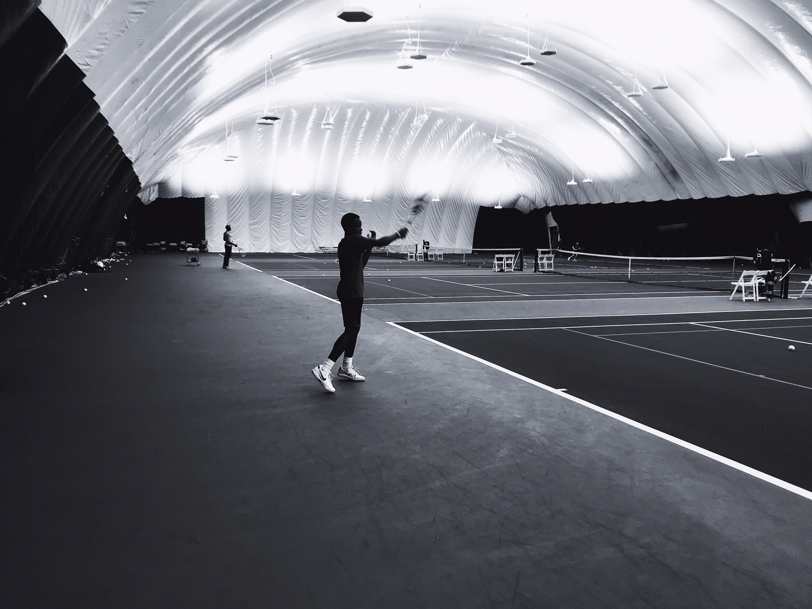
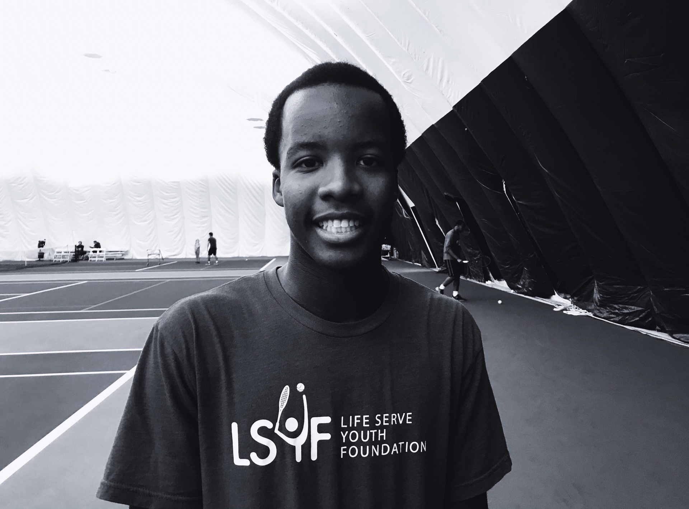
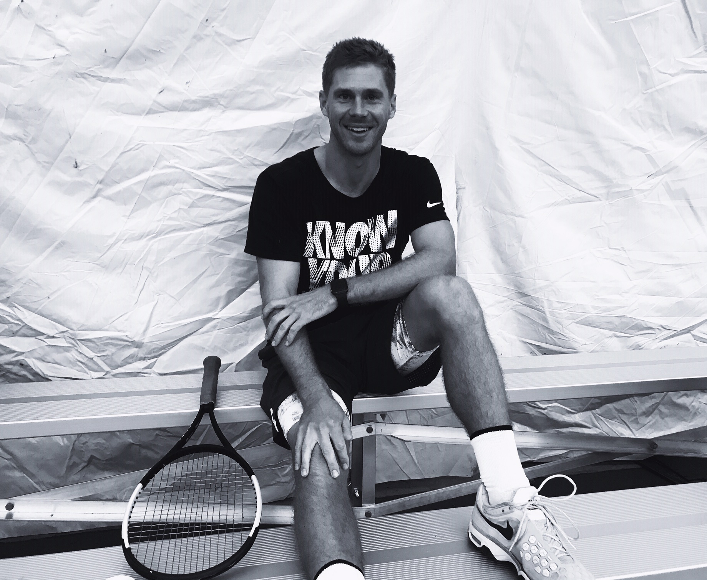

Starting with Love-Love
The Cary Leeds Center teaches kids tennis and life lessons too
BY MICHAEL TASHJI

Under the bubble at the Cary Leeds Center
That is all for now.

Athlete and volunteer mentor Shawn Mitchell Yon

Professional tennis player and coach Mark Oljaca